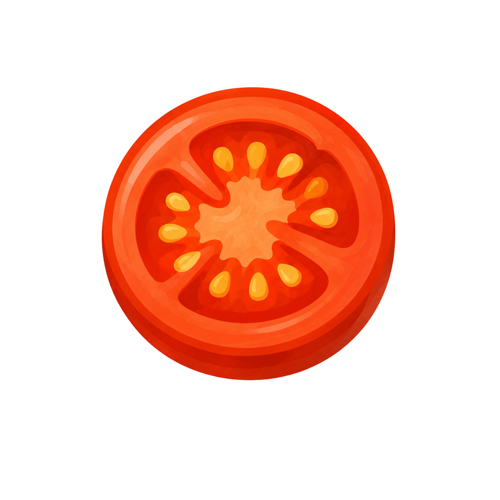
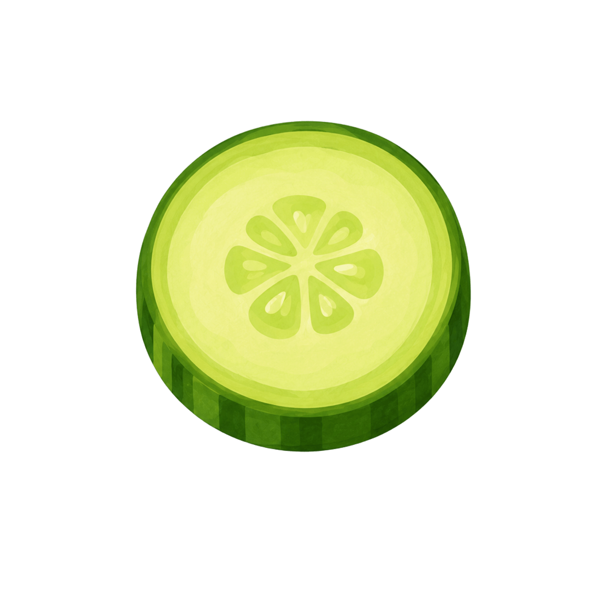

ثبت سریع، بدون شروع از صفر
خوراکهای اخیر و ذخیرهشده قبل از جستوجو در دسترساند.
همراه روزانه سلامت، به زبان فارسی
آووکادو کمک میکند غذایی را که واقعاً خوردهاید سریع ثبت کنید، برنامههای غذایی و تمرینیتان را جدا و منظم نگه دارید و هر روز بدانید قدم بعدی چیست.


برای یک روز معمولی
آووکادو برای لحظههای کوتاه بین کار، رفتوآمد و وعدهها طراحی شده؛ نه برای ساعتها ورود اطلاعات و دنبالکردن جدولهای پیچیده.
خوراکهای اخیر و ذخیرهشده قبل از جستوجو در دسترساند.
اول چیزی را میبینید که همین حالا به کارتان میآید.
آنچه خوردهاید ثبت میشود؛ بدون برچسب خوب، بد یا شکست.
ثبت خوراک روزانه
نام خوراک، مقدار و کالری دستی را وارد کنید یا از خوراکهای اخیر استفاده کنید. آووکادو عددی را بهعنوان مقدار پزشکی یا قطعی محاسبه نمیکند.
برنامه غذایی و تمرینی
برنامه غذایی میگوید قصد داشتهاید چه بخورید. ثبت روزانه میگوید چه خوردهاید. آووکادو این دو را هرگز خودکار یکی نمیکند.
ناهار پیشنهادی: مرغ و برنج · ساعت ۱۳:۳۰
تا وقتی شما تأیید نکنید، چیزی بهعنوان مصرفشده ثبت نمیشود.
چیزهایی که هر روز کار را آسانتر میکنند
موارد پرتکرار را با مقدار قبلی باز کنید، ویرایش کنید و فقط بعد از تأیید ثبت کنید.
هر بخش را وقتی آماده بودید تکمیل کنید؛ دیدن محصول به یک فرم طولانی وابسته نیست.
پاسخها را ذخیره کنید و فایل برنامه غذایی یا تمرینی را بهصورت PDF یا تصویر نگه دارید.
گزارشها و پیشنهادهای آینده
نسخههای آینده میتوانند روندهای ساده و پیشنهادهای هوشمند را بر اساس دادههای خودتان نشان دهند. این پیشنهادها جایگزین پزشک، متخصص تغذیه یا مربی واجد صلاحیت نیستند.
شروع در سه قدم
بدون رمز عبور؛ یک کد ششرقمی برای تأیید شماره.
پروفایل سلامت اختیاری است و بعداً هم میتوانید کاملش کنید.
نام، مقدار و کالری دستی را ثبت کنید یا از موارد اخیر شروع کنید.
اعتماد از رفتار محصول میآید
افزودن، ویرایش و حذف اطلاعات با اقدام صریح شما انجام میشود.
کالریهای داشبورد همان مقادیریاند که خودتان دستی وارد کردهاید.
آووکادو ابزار ثبت و برنامهریزی است، نه جایگزین متخصص.
شروع با شماره همراه کمتر از یک دقیقه زمان میبرد.